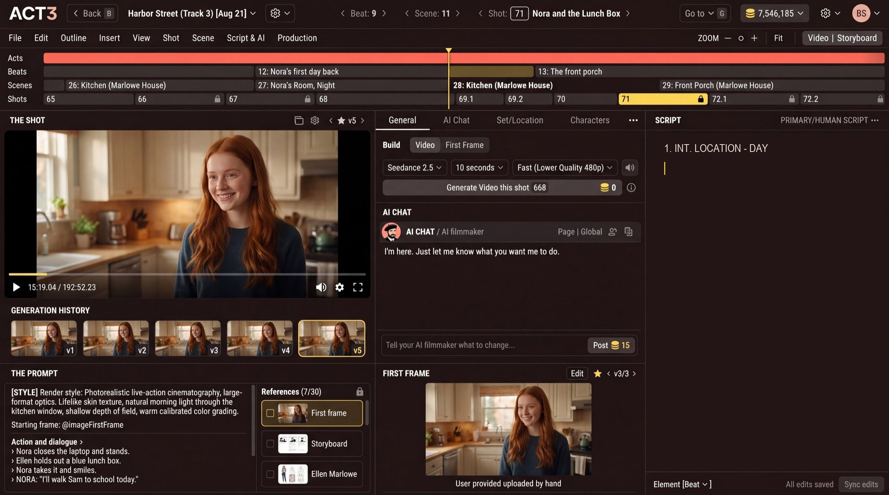

Step 7 of 7
Start writing
Type your scene straight into the SCRIPT pane, or ask the AI filmmaker. Write your request in the chat box and click Post. Watch the SCRIPT pane fill in.

Two ways to write
- Type it yourself. Click into the SCRIPT pane and write, line by line, as in any screenwriting app: scene headings, action, character names and dialogue.
- Ask the AI filmmaker. Type what you want in the AI chat box (Tell your AI filmmaker what to change…) and press Post. Ask for a scene, a line of dialogue, a new set, or a rewrite of what is there. The SCRIPT pane updates when it is done.
Your decision
Mix the two freely. Many filmmakers type the scenes they can already see and ask the AI to draft the ones they cannot. Changed your mind about starting from scratch? You can still import a screenplay or hand an idea to the AI Screenwriter from inside the project.
Think in scenes and shots
A scene is one place at one time. A shot is one camera setup inside it. As you write, ACT 3 AI breaks the script into beats, scenes and shots on the timeline, and each shot becomes something you can storyboard and film.
Where to go from here
With a few scenes written, build the rest of the film:
- Storyboard: get a frame drawn for every shot.
- Improve First Frame: perfect the picture a shot starts from.
- Build Videos: turn shots into video and move through the timeline.
Continue takes you back to the Step-by-Step Guide.